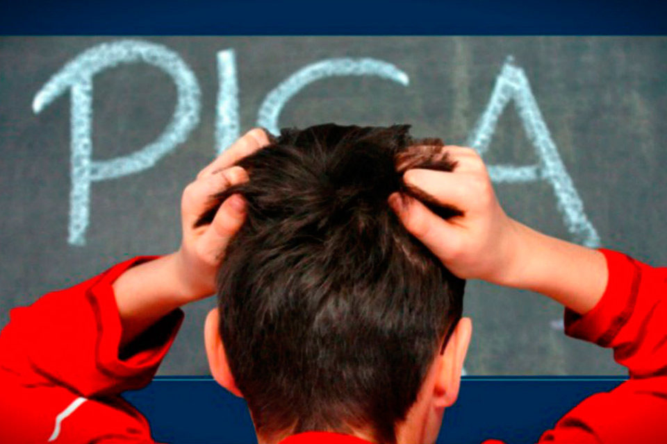
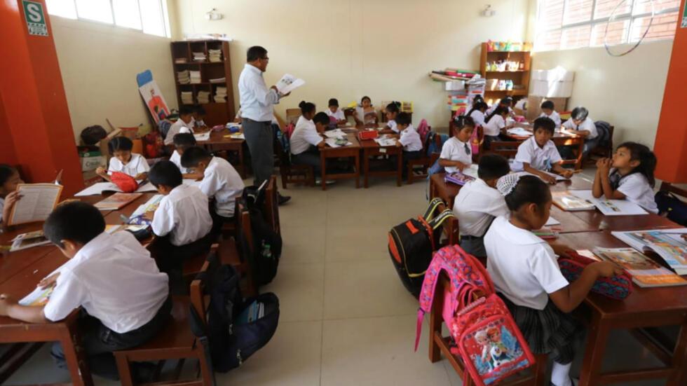

Evaluación Internacional de Alumnos (PISA)
EN EL AÑO 2018, Perú se ubicó en el puesto:
- Lectura: 62 de 79 países.
- Matemáticas: 65 de 79 países
- Ciencias: 64 de 79 países
Índice de Competitividad Global del Talento 2023
En este índice, Perú se ubicó en el puesto 82 de 134 países .
Esto significa un retroceso con respecto al año pasado, cuando finalizó en el puesto 78.
En cuento a "Pilar de permitir el crecimiento".

Investigaciones relevantes
1. Artículo
Estado de la Educación en el Perú: Análisis y perspectivas de la educación básica (2023):
Se encuentran diferencias significativas en el rendimiento académico,
la calidad de la infraestructura y la formación docente entre las escuelas públicas y privadas.
Los estudiantes de escuelas privadas generalmente obtienen mejores resultados en las pruebas estandarizadas,
asisten a escuelas con mejor infraestructura y tienen docentes con mayor formación.
2. Artículo
"Desigualdad educativa en el Perú: Un análisis de la brecha entre educación pública y privada" (2021):
Realizado por:Revista Peruana de Investigación en Educación, analiza las causas y consecuencias de la desigualdad educativa en Perú.
3. Estudio
"Factores asociados al rendimiento académico en estudiantes de primaria en el Perú: Un análisis comparativo entre escuelas públicas y privadas" (2020):
Hallazgos:
Se encuentran que el nivel socioeconómico, el acceso a recursos educativos y la calidad de la enseñanza son factores que influyen significativamente en el rendimiento académico.
Los estudiantes de escuelas privadas generalmente provienen de familias con mayor nivel socioeconómico, tienen acceso a más recursos educativos y reciben una enseñanza de mejor calidad.